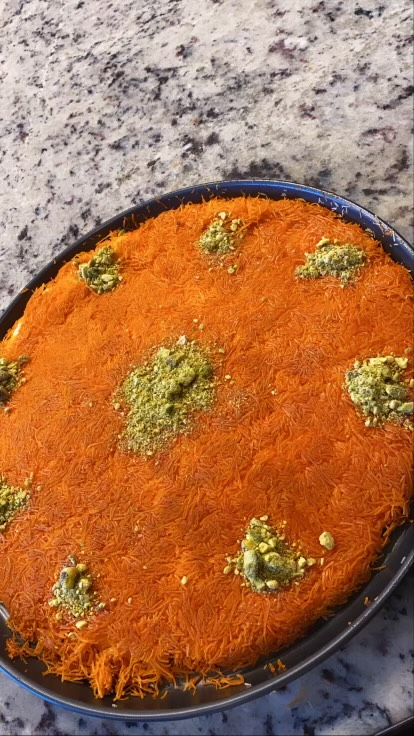
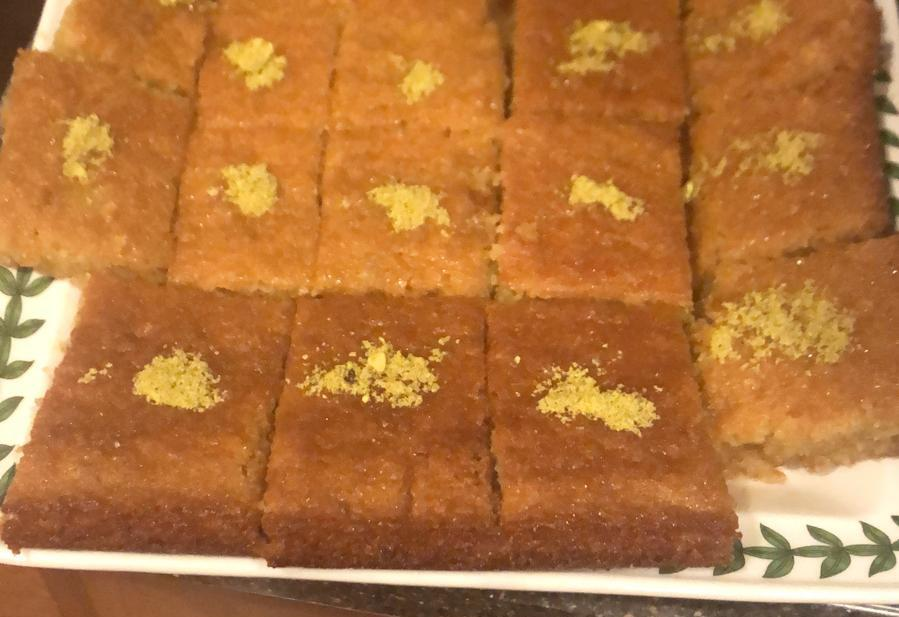

Dessert Recipes:
Knafeh

Syrup ingredients:
- 4 cups of sugar
- 2 cups of water
- 1 teaspoon of lemon juice
Knafeh ingredients:
- 1 package of shredded filo dough
- 1 1/2 cups of melted unsalted butter
- 3/4 cup of crushed pistachio
- 1/2 pound of fresh mozzarella
- 1 pound of queso blanco
- 1 tablespoon of ricotta cheese
- Orange food coloring
Directions:
- Preheat oven to 400° F
- In a food processor, chop the filo dough finely, then place it in a large bowl
- In another bowl, mix the ricotta, mozzarella, and queso blanco together
- Soak the bowl of cheese in water for 10 minutes to remove the salt, then wring out the water from
the cheese
- Add 2 tablespoons of sugar to the bowl of cheese
- Melt the butter and mix in the food coloring with it
- Pour the melted butter into the bowl of dough, mix until the butter is absorbed
- Evenly spread the dough into a 10 inch circular pan and firmly press into the bottom and the edges
- Spread the cheese over the pan, avoiding the edges
- Bake until the cheese is melted and slightly golden brown and the edges of the dough are brown
(around 30 minutes)
- For the syrup, combine the water and sugar in a small sauce pan and bring it to a boil
- After it reaches a boil, lower the heat and stir in the lemon juice
- Let simmer until the sugar is dissolved and the syrup has thickened
- Remove the pan from the oven
- Place a large plate over the entire pan and carefully flip it upside down
- Slowly lift up the pan, leaving the knafeh in the plate
- Lightly pour the syrup over the knafeh and cut it into sqaure pieces
- Garnish each piece with the crushed pistachio
- Enjoy!
Hareesah

Syrup ingredients:
- 4 cups of sugar
- 2 cups of water
- 1 tablespoon of lemon juice
Hareesah ingredients:
- 4 1/2 cups of semolina
- 1 cup of sugar
- 2 teaspoons of baking powder
- 3/4 cup of vegetable oil
- 3/4 cup of whole plain yogurt
- 1/2 cup of water
- Crushed pistachio
Directions:
- For the syrup, combine the water and sugar in a small sauce pan and bring it to a boil
- After it reaches a boil, lower the heat and stir in the lemon juice
- Let simmer until the sugar is dissolved and the syrup has thickened
- Preheat the oven at 350° F
- In a large mixing bowl, thoroughly mix all of the hareesah ingredients except for the tahini
- Spread the tahini on the large baking tray
- Pour the hareesah mixture into the baking tray and spread it out evenly
- Place the tray into the preheated oven
- Take the hareesah out of the oven when it is golden brown
- Pour the syrup over the hareesah while it is hot, then leave it on the counter to cool down
- Cut the hareesah into square pieces and garnish each piece with pistachio
- Enjoy!